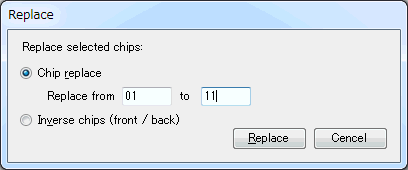

| Advanced operations |
|---|
| Replace |
Click [Edit(E)] - [Replace(R)] in the menubar to show replace dialog.

Tp execute the replacement, please specify the condition and click [Replace]. The replacement would be done to the selected chips. (If you don't select any chips before you open replace dialog, all chips would be selected automatically.)
It replaces from the specified chip number (in the selected chips) to the new one. Front/back info are not changed.
It inverts front/back info. The chip numbers are not changed.